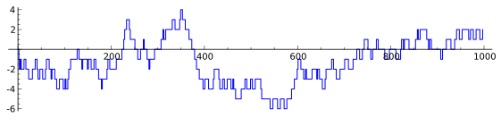
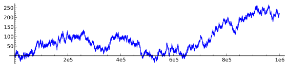
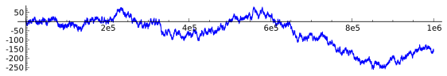
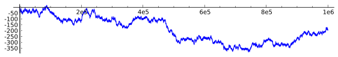
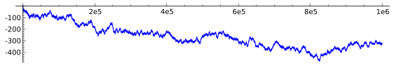

Four our elliptic curves $E$:
ROUGHLY — half the Fourier coefficients $a_E(p)$ are positive and half negative.
That is: there are roughly as many $p$'s for which the number of rational points of $E$ over $\mathbf{F}_p$ is
greater than $p+1$
as there are primes for which it is
less than $p+1$.
Sign of the $a_E(p)$ - a table
| $\text{Curve}$ | $\text{Positive } a_E(p)\text{ for }p<10^7$ | $\text{Negative }a_E(p)\text{ for }p<10^7$ |
|---|
| 11a (rank 0) | 332169 | 332119 |
| 32a (rank 0; CM) | 166054 | 166126 |
| 37a (rank 1) | 332127 | 332240 |
| 389a (rank 2) | 332317 | 332022 |
| 5077a (rank 3) | 331706 | 332632 |
Finer Statistical Issues
So let's study finer statistical issues related to this symmetric
distribution. For example, we can ask the raw question:
which of these classes of primes are winning the race, and how often?
I.e., what can one say about:
\Delta_E(X) =
\#\{p \text{ such that } |E(\mathbf{F}_p)| > p+1\}
minus
\#\{p \text{ such that } |E(\mathbf{F}_p)| < p+1\}?
Equivalently, putting:
\gamma_E(p) = \begin{cases}
0 & \text{if $p$ is a bad or supersingular prime for $E$},\\
-1 & \text{if $E$ has more than $p+1$ points rational over $\mathbf{F}_p$},\\
+1 & \text{if less}
\end{cases}
\Delta_E(X) = \sum_{p\leq X} \gamma_E(p)
Rank 0 curve 11a ($p<1000$):

Graphs of $\Delta_E(X) = \sum_{p\leq X}\gamma_E(p)$
Rank 0 curve 11a ($p < 10^6$):

Rank 1 curve 37a ($p < 10^6$):

More graphs of $\Delta_E(X) = \sum_{p\leq X}\gamma_E(p)$
Rank 2 curve 389a ($p < 10^6$):

Rank 3 curve 5077a ($p < 10^6$):

$\Delta_E(X): =\sum_{p\le X}\gamma_E(p)$
"Means" and "Percentages of positive (or negative) support"
Recall that to say that
\delta(X) = \sum_{p\le X}g(x)
possesses a limiting distribution $\mu_\delta$ with respect to the multiplicative measure $dX/X$
means that for continuous bounded functions $f$ on $\mathbf{R}$ we have:
\lim_{X \to {\infty}}\ {\frac{1}{\log X}}\int_0^Xf(\delta(x))dx = \int_{\mathbf{R}}f(x)d\mu_\delta(x).
The
mean of $\delta(X)$ is by definition:
{\mathcal E} : = \lim_{X \to {\infty}}\ {\frac{1}{\log X}}\int_0^X\delta(x)\frac{dx}{x} = \int_{\mathbf{R}}d\mu_\delta(x).
In the work of Sarnak and Fiorilli, another measure for understanding "bias behavior" is given by what one might call
the percentage of positive support (relative to the multiplicative measure $dX/X$). Namely:
\begin{align*}
{\mathcal P} & := \lim {\rm inf}_{X\to \infty}{\frac{1}{\log X}}\int_{2\le x \le X; \delta(x)\le 0}dx/x\\
\quad &= \lim {\rm sup}_{X\to \infty}{\frac{1}{\log X}}\int_{2\le x \le X; \delta(x)\le 0}dx/x
\end{align*}
It is indeed a conjecture, in specific instances interesting to us, that these limits ${\mathcal E} $ and ${\mathcal P}$ exist.
(Discuss a beautiful result of Fiorilli about ${\mathcal P}$)
More General Weighting Functions
Consider weighting functions $p\mapsto g_E(p)$ that have the property that:
Any such $p \mapsto g_E(p)$ represents a version of a "bias race".
To illustrate specific features of the "Explicit Formula" we focus on
three examples of such races for an elliptic curve $E$.
\gamma_E(p) = \begin{cases}
0 & \text{if $p$ is a bad or supersingular prime for $E$},\\
-1 & \text{if $E$ has more than $p+1$ points rational over $\mathbf{F}_p$},\\
+1 & \text{if less}
\end{cases}
Sums of Local Data
RAW
|
$\Delta_E(X): =\sum_{p\le X}\gamma_E(p)$
|
MEDIUM-RARE
|
${\mathcal D}_E(X):= {\frac{\log\ X}{\sqrt X}}\sum_{p \le X}{\frac{a_E(p)}{\sqrt p}}$
|
WELL-DONE
|
${D}_E(X):= {\frac{1}{\log X}} \sum_{p \le X}{\frac{a_E(p)\log p}{ p}}$
|
The fun here is that there are clean conjectures for the values of the
means (relative to $dX/X$)
—i.e., the biases—
of the three
"sums of local data" and clean expectations of
their
variances:
(Use mouse to hover over definition above to see a conjecture.)
The well-done data—the mean is (conjecturally)
-r,
where $r=r_E$ is the
analytic rank of $E$.
The medium-rare data—the mean is (conjecturally)
1-2r
The raw data—the mean is (conjecturally)
{\frac{2}{\pi}}- {\frac{16}{3\pi}}r + {\frac{4}{\pi}} \sum_{k=1}^{\infty} (-1)^{k+1}\left[{\frac{1}{2k+1}} + {\frac{1}{2k+3}}\right]r({2k+1}),
where
$r(n) := r_{f_E}(n) =$ the order of vanishing of $L(\text{symm}^n f_E, s)$
at $s=1/2$, with $f_E$ the newform corresponding to $E$ and $s=1/2$
is the central point.
$\Delta_E(X): =\sum_{p\le X}\gamma_E(p), \quad
{\mathcal D}_E(X):= {\frac{\log\ X}{\sqrt X}}\sum_{p \le X}{\frac{a_E(p)}{\sqrt p}} \to 1-2r,\quad
{D}_E(X):= {\frac{1}{\log X}} \sum_{p \le X}{\frac{a_E(p)\log p}{ p}} \to -r$
Comments
- The (conjectured) distinction in the variances of the three formats:
- The raw data has infinite variance
- The medium-rare and well-done data have finite variance
- The numbers
n\mapsto r_E(n) = \text{ the order of vanishing of }L(\text{symm}^n f_E, s)
\text{ at }s=1/2
(for $n$ odd) conjecturally determine all biases!
- We have the beginnings of some data for those numbers, $n\mapsto r_E(n)$, but
nothing systematic.
- And no firm conjectures yet.
Numerically, instead of simply looking at examples of curves of various ranks, we instead look
for curves with interesting $r_E(n)$ and focus on the mean...
r_E(n) = \text{ the order of vanishing of }L(\text{symm}^n f_E, s)
\text{ at }s=1/2
For example...
If $g(t)$ is a continuous function on $[-1,+1]$ with—appropriately defined—Fourier coefficients $\{c_n\}_n$, then the
mean of the sum of local data
\delta(X) := \sum_{p\leq X} g(a(p)/(2\sqrt{p}))
is conjecturally
\sum_{n=1}^{\infty} c_n(2 r_E(n) + (-1)^n).
Thus
\left\{\text{ Means of }\delta(X)'s\right\} \longleftrightarrow \left\{ r_E(n)'s \right\}
\gamma_E(p) = \begin{cases}
0 & \text{if $p$ is a bad or supersingular prime for $E$},\\
-1 & \text{if $E$ has more than $p+1$ points rational over $\mathbf{F}_p$},\\
+1 & \text{if less}
\end{cases}
r_E(n) = \text{ the order of vanishing of }L(\text{symm}^n f_E, s)
\text{ at }s=1/2
More on the Raw Data mean
Parity of $r_E(2k+1)$ is independent of $k$, i.e., $r_E(2k+1)\equiv r_E$ mod $2$ for all $k\geq 0$. Define $s_E(2k+1)$:
r_E(2k+1) = \text{(rank of $E$ modulo $2$)} + 2 \cdot s_E(2k+1)
Conjecture—the Raw Data Mean $\sum \gamma_E(p)$ is:
{\mathcal E} := {\frac{2}{3\pi}}\left(4+(-1)^{r+1} - 8r\right) + {\mathcal Z}
where ${\mathcal Z}$ is the "contribution from higher order vanishing" of the special value of the $L$-functions attached to higher symmetric powers, i.e.,
{\mathcal Z}:= {\frac{8}{\pi}} \sum_{k=1}^{\infty} (-1)^{k+1}\left[{\frac{1}{2k+1}} + {\frac{1}{2k+3}}\right]s_E(2k+1).
r_E(n) = \text{ the order of vanishing of }L(\text{symm}^n f_E, s)
= \epsilon + 2s_E(2k+1),
\quad\text{ where }\epsilon = \text{ rank of $E$ modulo }2.
$\Delta_E(X): =\sum_{p\le X}\gamma_E(p), \quad
{\mathcal D}_E(X):= {\frac{\log\ X}{\sqrt X}}\sum_{p \le X}{\frac{a_E(p)}{\sqrt p}} \to 1-2r,\quad
{D}_E(X):= {\frac{1}{\log X}} \sum_{p \le X}{\frac{a_E(p)\log p}{ p}} \to -r$
Higher order vanishing of L-functions of symmetric powers (Martin and Watkins)
| $E$ | rank | $k$ | $s_E(2k+1)$ | RAW?? | MEDIUM | WELL |
|---|
| 2379b | 0 | 1 | 2 | $\frac{10}{\pi} + \frac{16}{15}\sim 4.25$ | 1 | 0 |
| 5423a | 0 | 1 | 2 | $\frac{10}{\pi} + \frac{16}{15}\sim 4.25$ | 1 | 0 |
| 10336d | 1 | 1 | 2 | $\frac{6}{\pi} + \frac{16}{15}\sim 2.98$ | -1 | -1 |
| 29862s | 0 | 1 | 2 | $\frac{10}{\pi} + \frac{16}{15}\sim 4.25$ | 1 | 0 |
| 816b | 0 | 2 | 1 | $\frac{10}{\pi} - \frac{12}{35}\sim 2.84$ | 1 | 0 |
| 2340i | 1 | 2 | 1 | $\frac{6}{\pi} - \frac{12}{35}\sim 1.57$ | -1 | -1 |
| 2432d | 2 | 2 | 1 | $-\frac{2}{3 \, \pi} - \frac{12}{35}\sim -0.555$ | -3 | -2 |
| 3776h | 2 | 2 | 1 | $-\frac{2}{3 \, \pi} - \frac{12}{35}\sim -0.555$ | -3 | -2 |
| 128b | 0 | 3 | 1 | $\frac{10}{\pi} + \frac{16}{63}\sim 3.44$ | 1 | 0 |
| 160a | 1 | 3 | 1 | $\frac{6}{\pi} + \frac{16}{63}\sim 2.16$ | -1 | -1 |
| 192a | 1 | 3 | 1 | $\frac{6}{\pi} + \frac{16}{63}\sim 2.16$ | -1 | -1 |
Qualitative look at the Explicit Formula
Sum of local data = the "bias" + Oscillatory term + Error term
For example, for the Well-done data,
D_E(X) := \frac{1}{\log X}\sum_{p\leq X} \frac{a_{E}(p)\log p}{p}
the Explicit Formula gives $D_E(X)$ as a sum of three contributions:
-r_E + S_E(X) + O(1/\log X)
where the "Oscillatory term" $S_E(X)$ is the wild card (even assuming GRH)
and we take it to be the limit ($Y\to\infty$) of these generalized
trigonometric sums:
S_E(X,Y) = \frac{1}{\log X} \sum_{|\gamma|\leq Y} \frac{X^{i\gamma}}{i\gamma}
(sum over imaginary parts of complex zeros of $L(f_E,s)$ above $s=1/2$)
S_E(X,Y) = \frac{1}{\log X} \sum_{|\gamma|\leq Y} \frac{X^{i\gamma}}{i\gamma}
\quad\text{(sum over zeros)}
A Tentative Conjecture
It has been tentatively conjectured that
\lim_{X,Y\to\infty} S_E(X,Y) = 0,
but for computations it would be good to know
something more
explicit.
[[TODO: Make gadget to select and show several animated Plots of $S_E(X,Y)$]]
r_E(n) = \text{ the order of vanishing of }L(\text{symm}^n f_E, s)
\text{ at }s=1/2,
\qquad S_E(X,Y) = \frac{1}{\log X} \sum_{|\gamma|\leq Y} \frac{X^{i\gamma}}{i\gamma}
Three issues needing conjectures, and computations:
What should be conjectured about:
- the distribution of the $r_{E}(n)$'s
- the convergence of $\lim_{X,Y\to\infty} S_E(X,Y) = 0$
- the conditional biases—and multivariate distributions—related
to the zeroes of $L$-functions of tensor products of symmetric powers
of two (or more) automorphic forms